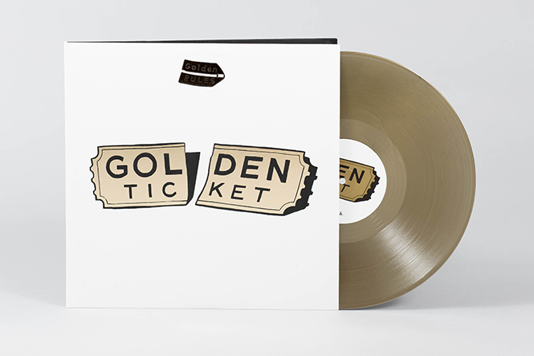
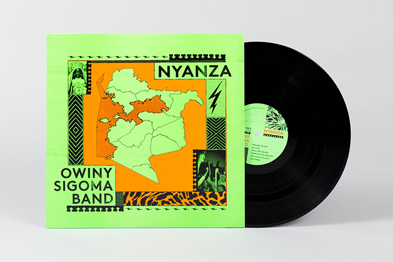
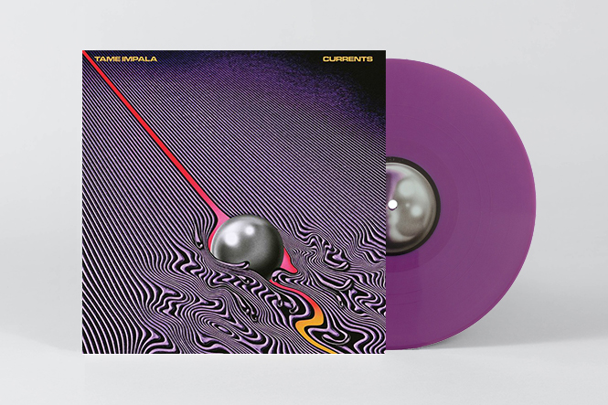

Holly Herndon
Just hours before Holly Herndon’s major UK show this autumn at Oval Space, home secretary Theresa May
unveiled
her so-called “snoopers’ charter” – the draft investigatory powers bill that would give police and security
services access to records tracking every UK citizen’s use of the internet.
It couldn’t have been more pertinent. For Herndon, the sanctity of online privacy is tantamount to the most
basic of freedoms. As she told The Guardian earlier this year in response to Edward Snowden’s NSA
revelations:
“Violating my inbox felt [worse] than if someone went into my apartment. That’s where my relationships
live”.
The single ‘Home’, a homage to that violated digital space, set the tone for what is a sophisticated
electronic
album that interrogates one of the most complex and divisive issues of our time. And yet, Platform is not
dry,
not hyper-technical, instead building critiques into maximal hooks and deconstructed pop choruses on tracks
like
‘Interference’, ‘Chorus’ and ‘An Exit’.
Holly Herndon
Just hours before Holly Herndon’s major UK show this autumn at Oval Space, home secretary Theresa May
unveiled
her so-called “snoopers’ charter” – the draft investigatory powers bill that would give police and security
services access to records tracking every UK citizen’s use of the internet.
It couldn’t have been more pertinent. For Herndon, the sanctity of online privacy is tantamount to the most
basic of freedoms. As she told The Guardian earlier this year in response to Edward Snowden’s NSA
revelations:
“Violating my inbox felt [worse] than if someone went into my apartment. That’s where my relationships
live”.
The single ‘Home’, a homage to that violated digital space, set the tone for what is a sophisticated
electronic
album that interrogates one of the most complex and divisive issues of our time. And yet, Platform is not
dry,
not hyper-technical, instead building critiques into maximal hooks and deconstructed pop choruses on tracks
like
‘Interference’, ‘Chorus’ and ‘An Exit’.

Golden Rules
Psychedelic beat maker Paul White and Florida MC/vocalist Eric Biddines measured up as Golden Rules for
another
of the year’s most overlooked albums. Laced with wit and strangeness, Golden Ticket inhabits the kind of
parallel universe that DJ Koze might call home, full of floral variety where every track is drugged under a
pleasant haze of melancholy and nostalgia. From album opener ‘Auntie Pearl’s House’, Golden Rules establish
their own set of markers, whether its nodding to ’80s cop show soul on ‘Down Soul Boogie’ or basking in the
old-school grandeur of Yasiin Bey’s cameo on ‘Never Die’. Dope embossed artwork and a pair of golden records
complete a really nice package. In a year where the heavyweights delivered heavy, serious records, it’s been
harder to find space for a lighter, feel good touch, but Golden Rules is good enough to more than distract
from
the world’s woes. Put it on and light up, things will be better in the morning.
 Len Leise
After bursting onto the scene with a pair of essential EPs for IFeel and Nado, Australian sound sculptor Len
Leise put the cherry on top of a remarkable 12 months with this glorious debut LP for Mark Barrott’s
celebrated
imprint. Channelling the otherworldly ambience of early Innovative Communication (and taking inspiration
from
the label’s artwork), the jazzy fusion of Windham Hill and the forward thinking tribalism of Eno and
Hassell’s
Fourth World : Possible Musics, Leise weaved liquid tabla, shimmering bells, fluid bass and breathy sax
around
the metallic staccato of marimba and stiff drum machines. Successfully fusing the organic and synthetic into
a
living, breathing and evolving whole, Lingua Franca saw Leise deliver his finest release yet, and the
defining
statement for the future primitive sound we’ve heard lately.
Len Leise
After bursting onto the scene with a pair of essential EPs for IFeel and Nado, Australian sound sculptor Len
Leise put the cherry on top of a remarkable 12 months with this glorious debut LP for Mark Barrott’s
celebrated
imprint. Channelling the otherworldly ambience of early Innovative Communication (and taking inspiration
from
the label’s artwork), the jazzy fusion of Windham Hill and the forward thinking tribalism of Eno and
Hassell’s
Fourth World : Possible Musics, Leise weaved liquid tabla, shimmering bells, fluid bass and breathy sax
around
the metallic staccato of marimba and stiff drum machines. Successfully fusing the organic and synthetic into
a
living, breathing and evolving whole, Lingua Franca saw Leise deliver his finest release yet, and the
defining
statement for the future primitive sound we’ve heard lately.

Owiny Sigoma Band
If you listened to their VF mix, you’ll have experienced Owiny Sigoma Band’s sprawling, cross-cultural
palate.
Avant-garde Spanish ambience, eastern melodies, African folk, industrial, Sun Ra, calypso, weird post
punk-cum-jungle, electro funk… an incredible amount of ground was covered in under an hour.
Whipping up a heady brew for their third full length, Nyanza is as genre-defying as the mix presaged, albeit
with entrenched roots in traditional Kenyan folk. The collective travelled to the Nyanza Province of Western
Kenya to meet members of the Luo tribe, an exchange which became the basis for this record – which updates
the
minimal Luo sound with the kind of left-right intensity discharged on 2012’s Power Punch.

I don’t think there’s anyone I know who doesn’t like this record. Before its release the word on the street
was
that Kevin Parker had created Tame Impala’s best record yet and the word wasn’t wrong. Currents begins with
the
seven minute plus groove of ‘Let It Happen’ which grooves from the start and builds then get’s stuck then
explodes! It’s an amazing tune and points the way forward for the rest of the record. There is not one shit
song
on here. It’s perfect pop music. It’s a true masterpiece. And the limited edition is even pretty
collectable.